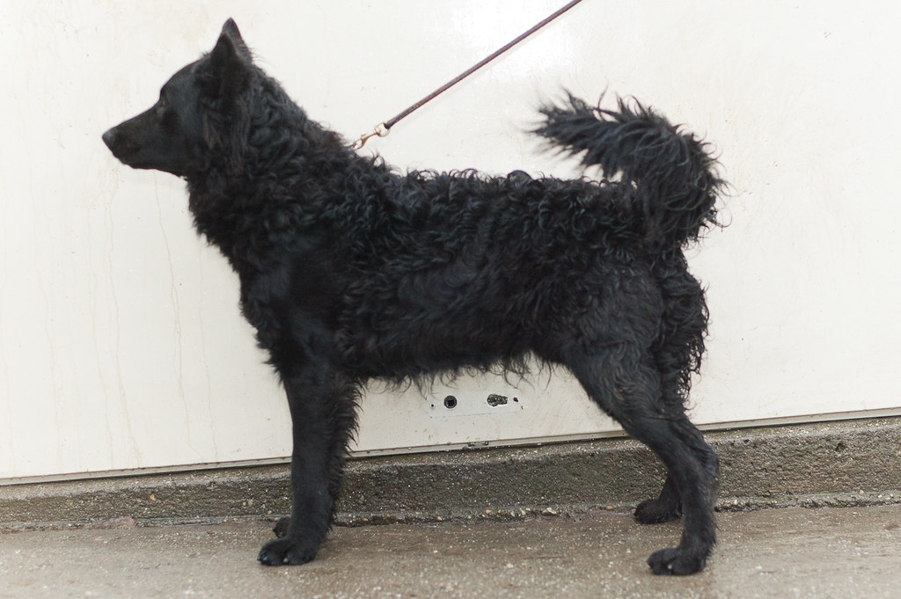

| Kutya fajták | Erdélyi kopó | Komondor | Kuvasz | Magyar vizsla | Mudi | Puli | Pumi |
|---|

A mudi az egyik legritkább, legkevésbé ismert magyar pásztorkutyafajta. A pásztorok német puli néven ismerték, ma már csak ritkán látható a nyájak, csordák mellett.
A mudi – főleg a különféle, régóta kitenyésztett fajtákkal összevetve – első pillantásra egyszerű keveréknek tűnhet. Szőre rövidebb mint a többi pásztorkutyáé, könnyen tanuló, intelligens állat. Tulajdonképpen bármely színben előfordulhat, de a standard nem ismer el minden színváltozatot. A leggyakoribb a fekete szín, van vörös, barna, fehér, fakó és hamvas (kékes árnyalatban játszó), de sokak szerint a legszebb, legkülönlegesebb színváltozat a cifra, a szürke alapon feketével spriccelt, amely Fényes Dezső szerint a mudi legeredetibb színváltozata. Érdekesség, hogy cifra-cifra párosítás nem ajánlott, a megszületendő kölykök igen gyakran betegek, de ez így van más merle-gént hordozó fajtáknál is, mivel a merle gén letalitást hordozhat.
Mivel a mudit eredeti munkája juhászokhoz, pásztorokhoz kötötte, a külleme másodlagos kérdés volt. Szolgálatkész, munkabíró és nem túl igényes kutyára volt szükség, a mudi pedig tökéletesen megfelel ezeknek a követelményeknek. Ezenkívül hosszú életű, intelligens, tanulékony, akinek a gazdája az istene, és egyetlen szemvillantásból is ért. A terelőversenyeken ma is kiemelkedő eredményeket ér el. A „dog dancing” és „agility” sport rajongói is felfedezték mozgékonysága, értelmessége és könnyen képezhetősége okán. Kitartásuk, kitűnő szimatuk miatt a katasztrófakutyák között is feltűnt néhány példányuk. Tudunk epilepszia-jelző és vaddisznóvadászatra használt példányokról is, de a II. világháború környékén kotorékozásra is használtak mudit. Egyes források szerint a solymászatban is bevált. Az sem fog csalódni, aki városi kutyának szeretné: nagyfokú alkalmazkodó képessége, kis termete a lakásban tartást is lehetővé teszi. Ez utóbbi szerepében a szennyeződést szinte taszító, igen könnyen tisztán tartható szőrzete külön előnyt jelent!